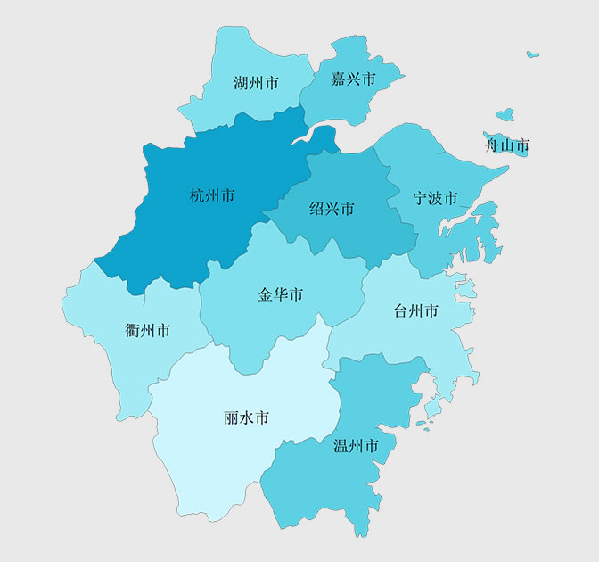
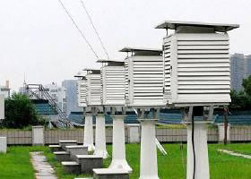

■热门搜索：
 [推荐] 农业部回应H7N9：春节餐桌不必谈禽色变
[推荐] 农业部回应H7N9：春节餐桌不必谈禽色变
[推荐] 农业部回应H7N9：春节餐桌不必谈禽色变

杭州市气象科普馆
科普馆介绍
杭州气象科普体验馆位于杭州市凤山门馒头山顶，是浙江省首个互动式的气象科普场馆。一期场馆占地面积约2200平方米，里面有雨滴生成装置、雷电通道、风力自行车等设施。
杭州气象科普体验馆内容更有知识性和趣味性，主要包括小型天文4D放映厅、天文知识展厅、低碳生活展厅和气象文化墙。
天文知识展厅由“人与宇宙”“宇宙探险”“深空奥秘”“太阳王国”“空间探索”以及“探月长廊”等小展厅组成。其中在“空间探索”里建了一个神舟7号返回舱模型，可以坐上去亲身感受。
杭州气象科普体验馆内容更有知识性和趣味性，主要包括小型天文4D放映厅、天文知识展厅、低碳生活展厅和气象文化墙。
天文知识展厅由“人与宇宙”“宇宙探险”“深空奥秘”“太阳王国”“空间探索”以及“探月长廊”等小展厅组成。其中在“空间探索”里建了一个神舟7号返回舱模型，可以坐上去亲身感受。
国家级科普场馆